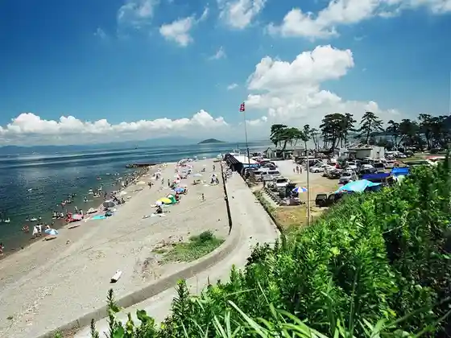
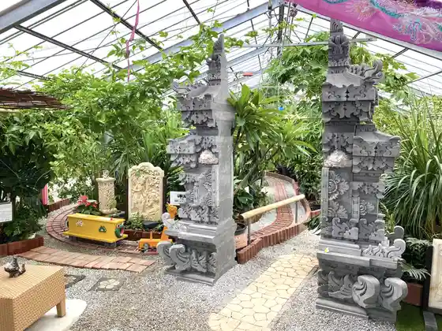

Irakomisaki
Tahara, Aichi · 0531-23-3516 · Official / source link
Nisaki CAMP (Hitoshi Saki Campground)
Tahara, Aichi · 0531-25-0276 · Official / source link

Isewan Ferii
Tahara, Aichi · 0531-35-6217 · Official / source link
Ogawa Farm
Tahara, Aichi · 090-2262-7154 · Official / source link

Kai Zukushi Atsumi
Tahara, Aichi · 0531-35-6731 · Official / source link
JA Aichi Minami Fureai Plaza Atsumi Mise
Tahara, Aichi · 0531-32-1151 · Official / source link
Irago Sarara Park
Tahara, Aichi · 0531-35-6411 · Official / source link
Maruka Farm Ichigo Kari
Tahara, Aichi · 0531-45-3167 · Official / source link
Santeparuku Tahara
Tahara, Aichi · 0531-25-1234 · Official / source link
Ichigo Kari Nyu Atsumi Kanko
Tahara, Aichi · 0531-32-0636 · Official / source link
Roadside Station (Akabane Rokosuteshon)
Tahara, Aichi · 0531-45-5088 · Official / source link
Roadside Station (Tahara Mekkunhausu)
Tahara, Aichi · 0531-23-2525 · Official / source link
Hatsu Ritsu Ike Park
Tahara, Aichi · 0531-33-1118 · Official / source link
Irakomisaki Lighthouse
Tahara, Aichi · 0531-23-3516 · Official / source link
Zao Yama Lookout
Tahara, Aichi · 0531-22-0426 · Official / source link
Irako Na no Hana Garden
Tahara, Aichi · 0531-23-3516 · Official / source link
Hinode no Sekimon
Tahara, Aichi · 0531-23-3516 · Official / source link
Koijigahama
Tahara, Aichi · 0531-23-3516 · Official / source link
Tahara Castle Ruins (Tahara Museum)
Tahara, Aichi · 0531-22-1720 · Official / source link